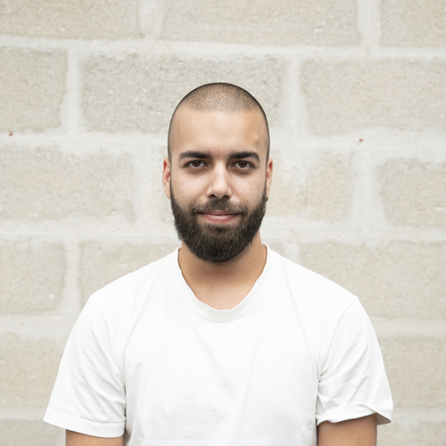
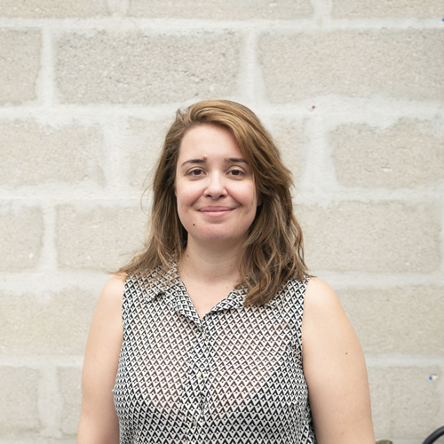
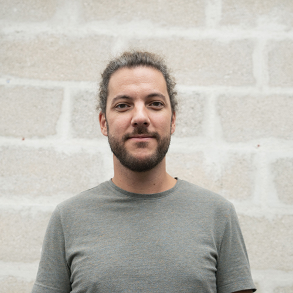
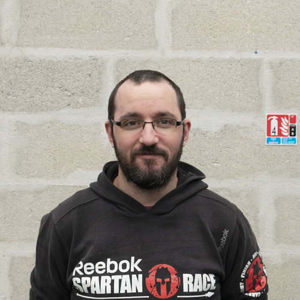
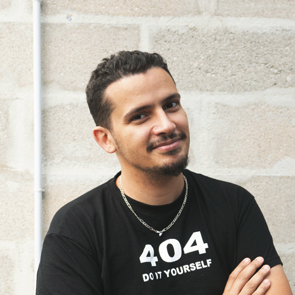

[Florian]
Aka Flauz the butcher
Flauz came from America to this dark place because he wanted to test the next level of mind challenge. Flauz thought that after all his adventures in the rough territories of his land nothing would beat him. What he didn't expect, like many others, is that he would become a part of this mad building.

[Léonard]
Aka Leo the Bug
Leo is one of the main challengers of the school. We won't tell his full name because he is famous for escaping the most secure prisons of Europe and now he is on the wanted list of Interpol. He looks tough but this might change in a few weeks as a Wilder. Maybe the secret services won't have to worry about him for a long time. We wish him good luck and may the odds be ever in his favor.

[Fanny]
Aka Fyn a Vibora
.Fyn lived in the favelas of Rio de Janeiro to stay hidden from the authorities. As a child she already broke the security systems of many governments to acces their secret databases. Now she is a famous cyber activist and she came to the School to stay under the radar. She may feel in her element there but she may not be aware of what this place implies.
[Morgan]
Aka Margo Laquoi
Don't be fooled by this ever smiling face. He is the son of the greatest godfather in Sicilia. He has always been safe thanks to his father and the worst crimes he was responsible for where nothing to him. After some time he began to feel a lack of adrenaline and decided to go the outer world and survive on his own. His then heard of a filthy place where he would be able to test his willpower. Does he have what it takes ? Maybe, maybe not.

[Maxence]
Aka Max Horn
After 12 years spent in the Rainforest In Bangladesh, Max thought he survived to the most dangerous environment in the world. He fought crocodiles barehanded, ate snakes for breakfast, resisted diseases, and felt the worst weather you could never imagine. He only had his ... and his knife with him and those were all he ever needed. Now he found another challenge that were he will meet the best and the worst of this world. Happy Wild games!
[Charlotte]
Aka Crazy Chachou or CC
CC is the creation of the Arkham Sanitarium - Massachusetts. It's a psychiatric hospital where they treated patients in some unusual ways. Some people heard that the experiments were related to merfolks and the cult of an old divinity living under the sea. We don't really know what happened to CC during those dark days but maybe she is the most fitted person for our strange school. Approach with caution! We warned you.

[Thomas]
Aka The GoatMaster
The GoatMaster came from a far island were only two species lived in harmony. With a soft white fur, the goats. With a rough dark fur, a man, the GoatMaster. It is said that he was abandoned on this island and was raised by the goats. He became so close that he learned their language and (censored). Nowadays he is at the best of his goat skills and he decided to come the battlefield of the Wild Code School to fight his eternal rival, the ChickenKing.

[Jenny]
Aka the Jenowl the MindTwisterer
If you are looking for Jenowl during the day you won't find her. She is a night's bird. When the sun goes down she unleashes her full potential. Try the back alleys of Bratislava and you may find. If you survive the creepy people wandering in these dark streets. She recently found shelter in our school and teaches her dark arts to the newcomers if they can bear it. She won't fear you but fear her.

[Abdou]
Aka the ChickenKing
The ChickenKing came from a distant village in the mountains. One sad day the village was attacked by an army of chickens and only one little boy survived. The chickens who made this place their new home saw a great power and a great future in Abdou. That is why they spared his life and decided to raise him as they would raise their own kin. They taught him the chaotic chicken language and the secret chicken fighting techniques from the old times. He then became the ChickenKing decided to come the battlefield of the Wild Code School to fight his eternal rival, the GoatMaster.